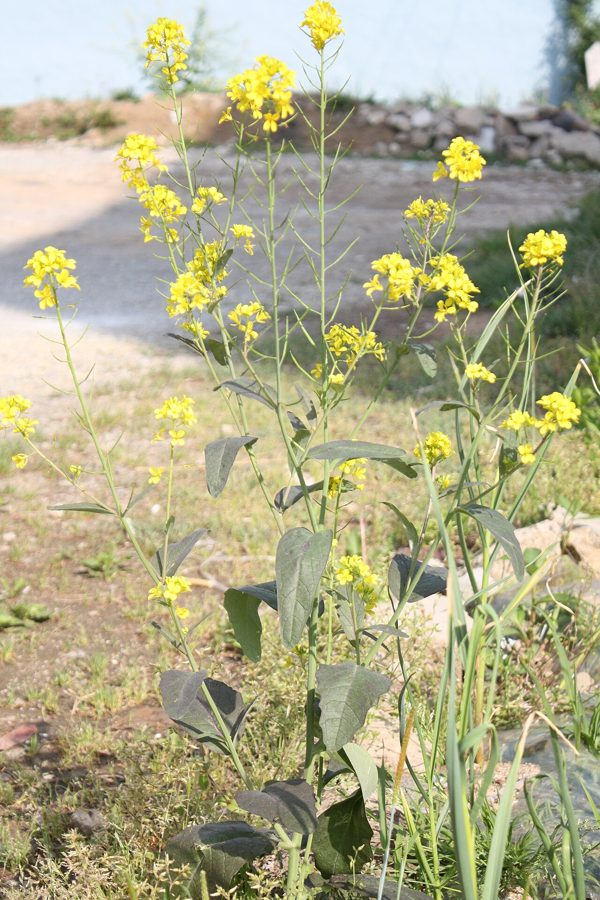

सरसोंIndian Mustard
Brassica juncea · Brassicaceae · FLR-0052

- Scientific name
- Brassica juncea (L.) Czern.
- Family
- Brassicaceae
- Hindi
- सरसों
- Status here
- cultivated
- IUCN
- not evaluated
When to look कब देखें
Expected mainly in January, February, March, October, November, December.
सरसों / Indian Mustard
Brassica juncea (L.) Czern. — Brassicaceae
सरसों (राई) — उत्तर प्रदेश की एक प्रमुख रबी (शीतकालीन) तिलहन फसल (oilseed crop) है। यह एक सीधे बढ़ने वाला वार्षिक शाकीय पौधा (annual herb) है जो 80 से 160 सेमी की ऊंचाई तक पहुंचता है। सर्दियों के महीनों में (दिसंबर-फरवरी) इसके पौधों के शीर्ष पर चमकीले पीले रंग के छोटे फूलों के घने गुच्छे आते हैं, जो पूरे ग्रामीण परिदृश्य को एक खूबसूरत पीले रंग की चादर में बदल देते हैं। ये फूल मधुमक्खियों और अन्य परागणकों के लिए भोजन का मुख्य स्रोत बनते हैं। फूल आने के बाद इसमें बारीक, सुई जैसी फलियाँ (siliques) लगती हैं जिनमें गोल, छोटे, तीखे स्वाद वाले काले-भूरे रंग के बीज विकसित होते हैं। सरसों का तेल उत्तर प्रदेश में खाना पकाने का मुख्य माध्यम है और इसकी हरी पत्तियों का उपयोग पौष्टिक साग बनाने के लिए किया जाता है। यह फसल स्थानीय कृषि और ग्रामीण जीवन का एक अभिन्न अंग है।
Quick Identification त्वरित पहचान
| Feature | Description |
|---|---|
| Form | Erect annual herb (80–160 cm tall) with a taproot system; stems are branched, smooth, and pale green |
| Leaves | Alternately arranged; lower leaves are large, lyrate-pinnatifid (lobed at the base, 10–25 cm long); upper leaves are smaller, lanceolate, entire, and do not clasp the stem |
| Flowers | Bright yellow, 4-petalled, arranged in a cross shape (cruciform, 7–10 mm diameter); clustered in terminal racemes |
| Fruit | Slender, cylindrical pod (silique, 2–5 cm long) with a short beak at the tip, spreading outward or upward on a short stalk |
| Seeds | Tiny, spherical (1–1.5 mm diameter), dark reddish-brown to blackish, with a strongly reticulated (pitted) surface and a sharp, pungent taste |
Field tip: Look for tall annual plants in winter with large green leaves and terminal clusters of bright yellow cruciform flowers, followed by narrow, spreading pods containing tiny pungent dark seeds.
Morphology आकारिकी
Biometrics (typical measurements for irrigated mustard crops in Basti):
| Feature | Measurement |
|---|---|
| Plant height | 80–160 cm |
| Leaf length | 10–25 cm |
| Leaf width | 3–8 cm |
| Flower diameter | 7–10 mm |
| Pod (silique) length | 2–5 cm |
Leaves: The basal leaves are deeply petioled with a large terminal lobe and small lateral segments. Upper leaves are sessile and taper at the base, distinguishing this species from Rape (Brassica rapa), whose leaves clasp the stem.
Flowers: The flowers have 6 stamens (4 long and 2 short), characteristic of the family Brassicaceae. Self-pollination is common, but wind and insect visits increase seed set.
Associated Species / Interactions सहजीवी संबंध
Winter insect oasis.
- Pollinator magnet: The winter yellow-bloom is a vital food source for honeybees (
[INS-0038 Dwarf Honey Bee], Apis cerana), syrphid flies, and butterflies, which swarm the fields for nectar. - Predator-prey balance: Provides the primary habitat for the Transverse Ladybird (
[INS-0028 Transverse Ladybird]). The adult beetles and their alligator-like larvae prey on mustard aphids (Lipaphis erysimi), acting as a natural biological control agent. - Crop pests: Serves as the primary host for the mustard aphid, cabbage butterflies, and leaf miners.
- Intercropping companion: Often sown in mixed lines within wheat (
[FLR-0051 Wheat]) and chickpea fields, creating insect barriers and enhancing farm biodiversity.
Life Cycle / Phenology जीवन चक्र
- Sowing: Sown in early autumn (October–November) when the temperatures begin to drop, utilizing residual soil moisture.
- Vegetative growth: Grows rapidly through November, producing a dense rosette of large green leaves that cover the ground.
- Flowering: Terminal yellow flower clusters emerge in December, peaking in January and filling the air with a mild, sweet fragrance.
- Pod development: Green siliques develop through January–February as the yellow petals fall.
- Harvest: The crop matures and dries to a straw-yellow color in late February to March. The plants are cut, bundled, dried in the sun, and threshed.
Pests and Diseases कीट और रोग
- Mustard Aphid: Greenish-grey sucking insects (Lipaphis erysimi) gather in massive numbers on flower buds and young pods in humid, cloudy winter weather, stunt growth, and secrete sticky honeydew.
- Alternaria Blight: Fungal pathogen Alternaria brassicae causes concentric dark spots on leaves and pods, leading to seed shriveling.
- White Rust: Fungal disease Albugo candida forms white, shiny pustules on leaf undersides and deforms the flowering stems into swollen "stagheads."
Agricultural / Human Relevance कृषि प्रासंगिकता
Primary oilseed and culinary green.
- Mustard oil: The seeds are cold-pressed in local mills (Kohlu) to produce Sarson ka Tel (mustard oil), which has a strong, pungent aroma due to allyl isothiocyanate. It is the primary cooking medium in eastern UP households.
- Nutritious green: Young leaves are harvested during early thinning (November) to cook Sarson ka Saag, a traditional winter vegetable dish.
- Fodder cake: The dry residue left after oil extraction (mustard oil cake or khali) is fed to dairy cows and buffaloes as a high-protein supplement.
Traditional and Ethnobotanical Use
- Massage oil: Mustard oil is massaged onto the skin and scalp to stimulate circulation, provide warmth in winter, and relieve joint pain.
- Natural preservative: Used as the primary preservative in regional pickles, sealing the fruits and spices from air and fungal growth.
- Oil lamps: Traditionally burnt in clay lamps (diya) during Diwali and daily evening prayers in rural households.
- Cough relief: Mustard oil mixed with garlic cloves and ajwain is heated and applied to the chest to relieve congestion and infant coughs.
Cultivation Calendar
| Stage | Month(s) |
|---|---|
| Field preparation | October (fine tilth, manure application) |
| Sowing | October–November |
| Vegetative growth | November–December |
| Flowering | December–January |
| Harvest | Late February–March |
Expected Locally स्थानीय रूप से अपेक्षित
Not a field record. Written from published accounts for eastern Uttar Pradesh. No confirmed local sighting yet — if you have seen it, that is what the atlas needs.
अभी तक स्थानीय पुष्टि नहीं। यह विवरण प्रकाशित स्रोतों से है, किसी अवलोकन से नहीं।
A classic winter feature across Basti district. Farmers in Vikramjot and Harraiya blocks plant mustard in borders around their wheat fields or intercrop it with chickpea and lentil. During late December and January, the bright yellow fields are a major attraction along highways, and local honey collectors place wooden bee boxes near the fields to harvest fresh mustard honey.
Distribution वितरण
Global range: Probably native to Central Asia, but cultivated for centuries across Europe, the Middle East, and Asia.
In India: Cultivated extensively in northern and central plains; Rajasthan and Uttar Pradesh are the leading producers.
In Uttar Pradesh: Cultivated in all districts during the winter season.
In Basti district / eastern UP: Cultivated resident; the principal Rabi oilseed crop.
Research Questions शोध प्रश्न
- How does the presence of Coccinella transversalis (Transverse Ladybird) affect the economic damage threshold of Lipaphis erysimi (mustard aphid) in Basti? / बस्ती में सरसों के चेपा (aphid) के आर्थिक नुकसान की सीमा पर लेडीबर्ड बीटल (Ladybird) की उपस्थिति का क्या प्रभाव पड़ता है?
- What is the difference in oil yield and pungency between traditional black mustard (sarson) and improved Pusa cultivars in sandy soils? / रेतीली मिट्टी में पारंपरिक काली सरसों और उन्नत पूसा किस्मों के तेल उत्पादन और तीखेपन में क्या अंतर होता है?
- Does intercropping mustard with wheat reduce the incidence of wheat aphids compared to mono-cropped wheat?
- How effective is the traditional garlic-mustard oil rub in reducing chest congestion in young children compared to commercial chest rubs?
- Can children place a drop of mustard oil and a drop of water on a leaf to observe and record which one spreads faster? — A simple viscosity and surface tension activity.
Similar Species मिलती-जुलती प्रजातियाँ
| Species | Key Difference | हिंदी |
|---|---|---|
| Brassica rapa (Yellow Sarson) | Leaves clasp the stem at the base (amplexicaul); seeds are pale yellow (not dark brown) and less pungent. | पीली सरसों — तने को घेरने वाले पत्ते, पीले बीज |
| Brassica oleracea (Cabbage/Cauliflower) | Leaves are thick, fleshy, bluish-green, and covered in a waxy coating; does not produce slender siliques under normal field conditions. | बंदगोभी / फूलगोभी — मोटे, मोमी नीले-हरे पत्ते |
| Raphanus sativus (Radish) | Flowers are white or light purple (not yellow); fruit is a thick, spongy pod that does not split open; roots are fleshy white. | मूली — सफेद-बैंगनी फूल, फूली हुई बंद फलियाँ, सफेद जड़ |
Taxonomy & Classification वर्गीकरण
Original description. Carl Linnaeus described the species as Sinapis juncea in 1753 in Species Plantarum (Vol. 2, p. 668), from specimens collected in Asia. Vasily Czernajew transferred it to the genus Brassica as Brassica juncea in 1859 in Conspectus Plantarum Circa Charcoviam (p. 8). The genus name Brassica is the classical Latin name for cabbage. The specific name juncea is Latin for "rush-like," referring to its slender, reed-like branching stems.
Subspecies. Monotypic as a crop species, though multiple agricultural varieties (e.g. B. juncea var. rugosa or var. foliosa) are recognized in regional cultivation.
Family and order placement. Placed in the order Brassicales, family Brassicaceae (mustard family), tribe Brassiceae.
Phylogenetic notes. Brassica juncea is an allotetraploid species ($2n = 4x = 36$, genome AABB), derived from the natural hybridization of Brassica rapa (AA) and Brassica nigra (BB), as mapped in the historical "U's Triangle" of Brassica genetics.
IUCN status rationale. Not evaluated (NE) by the IUCN Red List. As a globally cultivated economic oilseed crop, it faces no conservation threats.
Photo Gallery फोटो गैलरी
References संदर्भ
- Linnaeus, C. (1753). Species Plantarum. Laurentii Salvii, Holmiae, Vol. 2, p. 668. [original description]
- Czernajew, V. M. (1859). Conspectus Plantarum Circa Charcoviam. Kharkov, p. 8.
- Indian Council of Agricultural Research (2021). Handbook of Oilseed Crops. ICAR, New Delhi.
- ICAR-Directorate of Rapeseed-Mustard Research (DRMR). Good Agricultural Practices for Mustard Cultivation. DRMR Extension Leaflet, Bharatpur.
- Hooker, J. D. (1872). The Flora of British India. Vol. 1. L. Reeve & Co., London.
- GBIF Occurrence Data — Brassica juncea (2026). GBIF taxon key: 3042751.
Source file: species/flora/crops/mustard.md